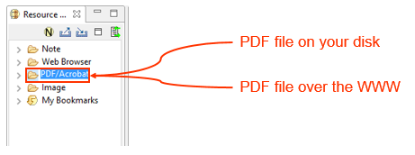
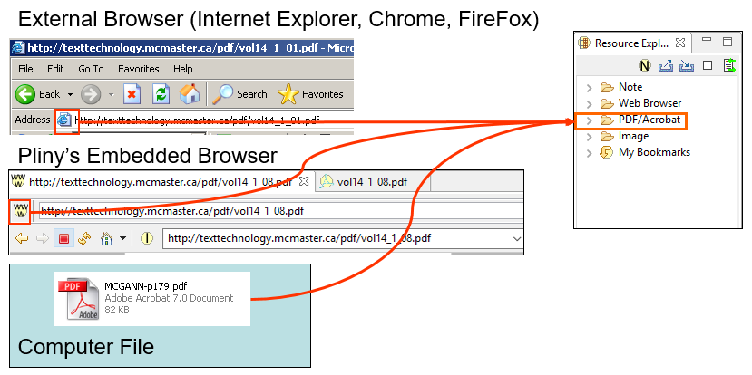
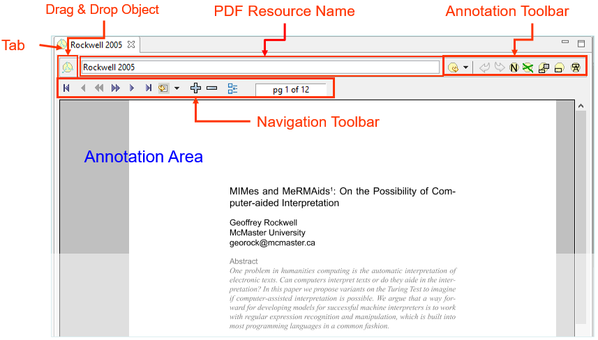
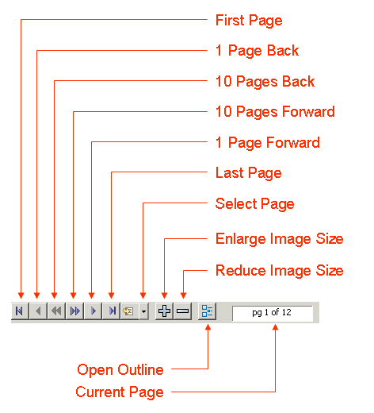
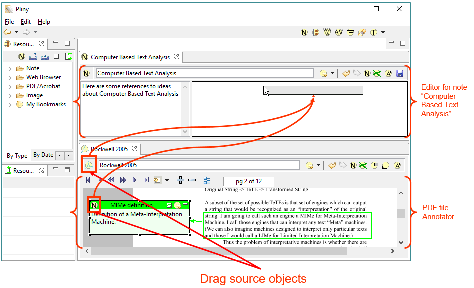

This section provides a reference section for the Pliny's PDF/Acrobat
annotator. If you are unfamiliar with how to use the PDF annotator within
Pliny, you might wish to see the tutorial on this
subject.
Note: Pliny's annotation tool for PDF files is built on top of
the open source version of the PDF viewer from JPedal. We have also been granted permission
to include the pjes.jar library which allows the annotator to work with PDF's
embedded fonts. Many thanks to IDRsolutions who have made an open-source
version of their viewer available, and allowed us to include the pjes.jar
library.
What's it for
The PDF Annotator can be used whenever you wish to annotate pages in a
PDF/Acrobat file. It will launch in the large central "working are" in the
Pliny window.
Importing a PDF file
A PDF file must be imported into the Pliny system before it can be
annotated. The importing process does two things:
- It caches a copy of the PDF file in Pliny's own storage area. Pliny
always uses the copy of the file in its cache whenever it shows it to you.
- It creates an PDF resource which is Pliny's way of addressing the
PDF file itself.
You import the file by dragging a reference to it, or from a browser
displaying it and dropping it on the PDF/Acrobat folder in the Resource
Explorer

Whether the source is a personal copy of a PDF file, or one you've
found over the web it is important to realise that it is always cached, and
then opened. There is a lot to do inside Pliny to start up the PDF annotator
before it can appear, please be patient if this takes a moment or two before
the first page itself appears.
What to drag?
If you are planning to import a PDF file you have on your hard disk,
find the icons that represent the files on your machine and drag them to the
PDF/Acrobat folder in the Resource Explorer.
If you find the PDF file using your non-Pliny browser such as
Internet Explorer or FireFox, take the icon beside the URL in the browser's
location area and drag it to the PDF/Acrobat folder.
If you find the PDF file while using the embedded Pliny browser take
the browser's drag source object and drag it to the PDF/Acrobat
folder.
This is shown in the following figure:

Screen components
Here is a typical display of the PDF file Annotator, with its parts
labelled:

The PDF file annotator has the following sections:
- The main working area is the Annotation Area. Here the a PDF
page appears, and the annotations attached to it can be created and edited. It
works in a way that is very similar to the Image annotators annotation area:
the annotation and note materials appear combined with the image of the page
they belong to. There is more about the Annotation Area and how to work in it
in its description.
- Above the annotation area is a collection of tools and other
objects. First, near the top is a a tab, and it identifies the PDF file you are
working on. The name showing there comes from the name of the PDF resource and
is not necessarily the URL where the PDF file came from.
- The PDF annotator has two groups of tools. The Navigation
Toolbar allows you to move between pages, change the size of the page
image, etc. The Annotation Toolbar, which is in the Pliny toolbar area
and allows to you create and manage annotations and notes on PDF pages. See the
next two sections for discussions about the two toolbars.
- Also in the Pliny toolbar one finds the drag and drop object, which
is described below, and the Resource name field which allows you to change the
name of the Pliny resource object for this PDF file. This name is the one Pliny
uses everywhere to identify this particular resource.
Navigation ToolBar
The Navigation ToolBar, with its button's labelled, looks like
this:

Most of the functions of the buttons and display and how they work
should be obvious. However, two perhaps are not:
- Select Page: Use this to jump to a particular page. To
operate it do not click on the icon, but on the down arrow beside
it. A menu will then appear with one item for each page in the document. The
item will also show in bracekts how many reference objects appear on the page.
An entry such as "p 3 [4]" refers to page 3, which contains four reference
objects. Select the page you want to jump to. Note that the page numbering is
based on the count of the number of pages, not necessarily the page
numbering at actually appears on the pages themselves: the first page
might be numbered "i" on the page, and the page numbered "1" on the page could
be in fact the 5th page of the document.
- Open Outline: some PDF files have a table of contents
included which, if present, allows you to jump to the page containing the
beginning of a chapter, section, etc by clicking on its name. To see the
outline for your current PDF file -- if there is one -- click on this button.
The outline display uses Eclipse's outline view.
Annotation Toolbar
The toolbar for the PDF file Annotator (which Eclipse places in the
main toolbar area) contains tools that work with the Annotator. Most of them
are used with the Annotation Area and allow things to be done within it. The
toolbar for the PDF Annotator looks like this:
 : Use this icon by
clicking on the down arrow symbol (
: Use this icon by
clicking on the down arrow symbol ( ) to
its right rather than the icon itself. Clicking the down-arrow will cause Pliny
to generate a list of all resources managed by Pliny that refer to the current
image. To open one of these resources, choose it from the list.
) to
its right rather than the icon itself. Clicking the down-arrow will cause Pliny
to generate a list of all resources managed by Pliny that refer to the current
image. To open one of these resources, choose it from the list.
 : This icon allows you to
undo the previous action you have done in the Annotation area. Undo can also be
chosen from the "Edit" menu, or requested using the standard keystroke for your
platform.
: This icon allows you to
undo the previous action you have done in the Annotation area. Undo can also be
chosen from the "Edit" menu, or requested using the standard keystroke for your
platform.
 : This icon allows you to
redo an action you have just undone in the Annotation area. Redo is also
available from the "Edit" menu, or can be requested by the standard keystroke
for redo.
: This icon allows you to
redo an action you have just undone in the Annotation area. Redo is also
available from the "Edit" menu, or can be requested by the standard keystroke
for redo.
 : This icon allows you
to create a new note and a note reference for it that will appear in the
Annotation area. You can use it in two ways:
: This icon allows you
to create a new note and a note reference for it that will appear in the
Annotation area. You can use it in two ways:
- first click on the
button, then in the annotation area drag over the area there that you wish to
be used for the space the reference is to occupy, or
- you can drag the
button itself into the annotation area. This will give you a "standard size"
note which you can later change its size.
After Pliny has responded and created a reference and new note
for you, you will want to type in the note name and its text in the newly
created space. Each time a new note is created the "create new note" state is
cleared, and you must push the
again to create another note or drag a new note from the
button. There is a keyboard
shortcut that puts Pliny in "create new note" state as well: F5).
 : This icon
allows you to create a connection between two objects that appear in the
annotation area (a line joining them). A connection is usually used to
represent some sort of conceptual connection between the two items.. To
establish a connection line first click on the
, then click in the reference
or anchor that should hold the start of the line, and drag to the reference or
anchor where the line should end. Each time you wish to create a new connection
you must first push the
again. The keyboard shortcut for this is F6.
: This icon
allows you to create a connection between two objects that appear in the
annotation area (a line joining them). A connection is usually used to
represent some sort of conceptual connection between the two items.. To
establish a connection line first click on the
, then click in the reference
or anchor that should hold the start of the line, and drag to the reference or
anchor where the line should end. Each time you wish to create a new connection
you must first push the
again. The keyboard shortcut for this is F6.
 : This icon
creates a full annotation for you. An annotation consists of a note, a
reference to the note (on this image), an anchor the note refers to and a
connection line between them. To use it, first click on the
button, then drag over the
area over the image where you wish the anchor to be placed. Pliny will respoind
by creating the anchor, a note and note reference and a linking line. You can
then type in the note title and text in the newly created reference and can
move the note to another place on the screen if you wish. Each time a new
annotation is created the "create new annotation" state is cleared, and you
must push the again to
create another annotation. The annotation button is a convenience only -- using
it is exactly equivalent to using the anchor button (
: This icon
creates a full annotation for you. An annotation consists of a note, a
reference to the note (on this image), an anchor the note refers to and a
connection line between them. To use it, first click on the
button, then drag over the
area over the image where you wish the anchor to be placed. Pliny will respoind
by creating the anchor, a note and note reference and a linking line. You can
then type in the note title and text in the newly created reference and can
move the note to another place on the screen if you wish. Each time a new
annotation is created the "create new annotation" state is cleared, and you
must push the again to
create another annotation. The annotation button is a convenience only -- using
it is exactly equivalent to using the anchor button ( ) to create the anchor, the note button
() and the connection button
() to join them together. The
keyboard shortcut for this is F7.
) to create the anchor, the note button
() and the connection button
() to join them together. The
keyboard shortcut for this is F7.
- : This icon creates
an anchor area for you. To use it first click on the
as a button, then in the
annotation area drag out the area where you wish the anchor to appear. Pliny
will respond by creating the anchor for you. Each time a new anchor is created
the "create new anchor" state is cleared and you must push the
again to create another anchor.
The keyboard shortcut for this is F8.
 : Click on this icon to
cause all the references in this reference area to be minimized.
: Click on this icon to
cause all the references in this reference area to be minimized.
Drag and Drop
An important element of Pliny's design was in the work involved in
trying to make the creation of notes and annotations as straight-forward as
possible. To this end we have added various drag and drop features to Pliny. Of
course, references or anchors can be dragged about on a PDF page's annotation
area -- that is how you make use of the 2D space the annotation area provided
to organise the notes. However, drag and drop can also be used to copy
materials from outside the image annotator into it, or from inside the image
annotator to other areas. Here is a summary of these drag and drop features
available in the annotator:
Into the Annotator
Here are the kind of things that can be dragged from elsewhere into
the annotation area:
- A reference to any resource can be dragged from the Resource
Explorer to the 2D annotation area. Pliny will interpret this as a request to
create a reference to that resource there. A reference to a note in the Note
Search View works the same way.
- If you have more than one editor/annotator open at the same time
you can drag a reference from one into the other by dragging the reference's
drag source object. See the figure in the section Out of the
Annotator to see where the drag source objects are.
- Text can be selected from another program that supports Drag and
Drop (such as Word) outside of Pliny and dragged onto the annotation area.
Pliny will interpret this as a request to create a note and a reference to it
in the area. If the dragged text begins with a short line of text that looks
like a heading, Pliny will interpret this as the note's title.
Out of the annotator
The PDF file annotator provides two kinds of drag source objects
that can be dragged from the annotator into another Pliny object. The following
figure shows them:

Here we see Pliny showing two working areas (the help section
"Dividing a Pane: docking" in the topic Managing
Panes describes how to split the Pliny window in this way). In the bottom
area the PDF annotator is displaying the 2nd page of our "Rockwell 2005"
document, and in the top area a note called "Computer Based Text Analysis". A
Pliny user can use one of the two drag source objects shown to make a reference
from something in the PDF annotator to a reference/annotation area in another.
You can see the drags being represented by the curved line with arrow from the
two source objects in the PDF area to the note's reference area.
- If the user wanted to insert a reference to the PDF page itself
-- page 2 of "Rockwell 2005" -- in his/her "Computer Based Text Analysis" note,
s/he should point at the drag source object belonging to the "Rockwell 2005"
PDF file (of the two marked in the figure above, this is the top one of the
two, and drag it into the reference area of the other note. Pliny will respond
during the drag by showing you a grey box similar to that shown in the figure
above. When you have placed the reference where you want it release the mouse
button, and Pliny will create a reference there for you to "Rockwell 2005",
page 2.
- If the user wanted to insert a reference from one of the notes on
this page into the "Computer Based Text Analysis" note then this can also be
done. Suppose the reference to "MIMe definition" was to be copied. Its drag
source object is in its reference display at the left end (see it highlighted
above). Point the mouse pointer at it and drag that object to a place in the
receiving note's reference area. Pliny will respond by creating a reference to
"MIMe definition" in the note's reference area. Note that dragging
between notes will only work when one points at the specific drag source
object. If one points elsewhere in the references area Pliny will not
understand it as a start of a request to drag a reference from one note to
another -- it will see it as a request to move the object in its current
reference space.